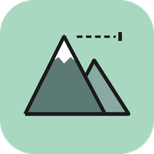

PlainAltitude privacy policy
This policy covers the PlainAltitude Android app (“PlainAltitude”), an altimeter and barometer. In short: PlainAltitude does not collect, sell or share any data. It has no account, no ads, no analytics and no tracking. The app does not have permission to use the internet.
Information the app handles
- Air pressure from your phone's barometer, used to work out your altitude and the pressure trend of the last three hours.
- Your location (GPS), if you allow it: the coordinates and the GPS altitude.
- The spots you save: name, note, time, altitude, air pressure and, if location is on, the coordinates.
- Your settings: units, calibration and theme.
All of this stays on your phone, in the app's private storage. None of it is ever sent to the developer or anyone else.
Location
PlainAltitude asks for location only after you tap “Use location”, and uses it only while the app is open on screen. It never tracks you in the background and never sends your position anywhere. The app works without location too: on phones with a barometer the altitude comes from air pressure.
Sharing and export
When you share a spot or export your spots as a CSV or GPX file, Android's share sheet sends it to the app you pick. Nothing is shared unless you do this yourself. A shared spot includes a link to its position on openstreetmap.org, which opens only if the person you share it with taps it.
Permissions
Location (precise and approximate), only while the app is in use. No internet, contacts, camera, microphone or storage access.
Purchases
PlainAltitude is free. It has no in-app purchases and no subscriptions.
Storage and deletion
You can delete saved spots in the app at any time. Uninstalling the app removes all its data. Since we never receive your data, there is nothing for us to delete on our side.
What we don't do
- We don't collect personal or sensitive information.
- We don't sell or transfer user data to third parties.
- We don't show ads or use advertising IDs.
- We don't use analytics or crash-reporting services.
Safety
Readings are estimates from your phone's sensors and are not meant for aviation, climbing safety or any decision where a wrong height could hurt someone.
Children
The app is not directed at children under 13 and does not knowingly collect information from anyone.
Changes
If this policy changes, the updated version will be posted on this page with a new date.
Contact
Questions or requests: open an issue on GitHub.